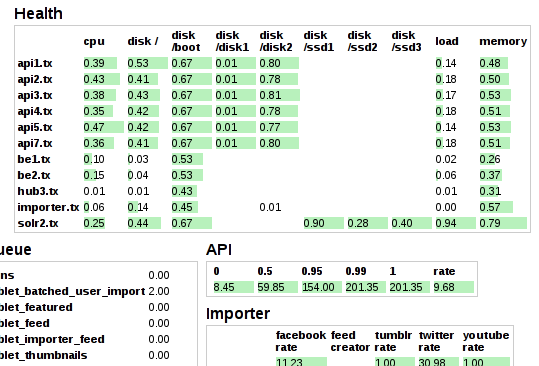
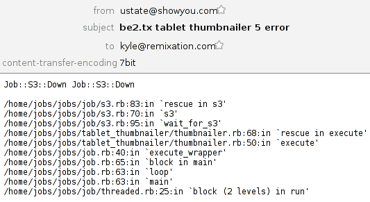

Powerful stream primitives
{% highlight clj %} (where (or (service #"^api") (service #"^app")) (where (tagged "exception") (rollup 5 3600 (email "dev@foo.com")) (else (changed-state (email "ops@foo.com"))))) {% endhighlight %}Riemann streams are just functions which accept an event. Events are
just structs with some common fields like :host and
:service You can use dozens of built-in streams for filtering, altering, and
combining events, or write your own.
Since Riemann's configuration is a Clojure program, its syntax is concise, regular, and extendable. Configuration-as-code minimizes boilerplate and gives you the flexibility to adapt to complex situations.
I wrote Riemann for operations staff trying to keep a large, dynamic infrastructure running with unreliable but fault-tolerant components. For engineers who need to understand the source of errors and performance bottlenecks in production. For everyone fed up with traditional approaches; who want something fast, expressive, and powerful.
All systems go
A small, extendable Sinatra app shows your system at a glance. Instantly identify hotspots, down services, and unbalanced loads.
Phone, SMS and email alerts
{% highlight clj %} (rollup 5 3600 (email "dev@startup.com")) {% endhighlight %} Riemann can tell you as much or as little as you want. Throttle or roll up multiple events into a single messages. Get emails about exceptions in your code, provider downtime, or latency spikes. You can also integrate with PagerDuty for SMS or phone alerts.

Simple clients
{% highlight ruby %} r = Riemann::Client.new r << {service: "www", state: "down", metric: 10000} r['state = "down"'] # => [#Riemann speaks Protocol Buffers over TCP and UDP for a compact, portable, and fast wire protocol. See the Ruby client as a guide.
Query states
{% highlight clj %} state = "error rate" and (not host =~ "www.%") {% endhighlight %}Search the Riemann index with a small query language. Clients can monitor each other, generate reports, or render dashboards.
Riemann queries form the basis for the realtime websockets dashboard, showing updated events as soon as they arrive.
See problems faster
Traditional monitoring systems run polling loops every five minutes, or roll up metrics on a minutely basis. In a Riemann infrastructure, clients (including stand-alone pollers) *push* their events to Riemann, which makes them visible within milliseconds. Low latencies let you see outages faster--and know the instant you've fixed the problem.
Throughput depends on what your streams *do* with events, but a stock Riemann config on commodity x86 hardware can handle *millions* of events per second at sub-ms latencies, with 99ths around 5ms. Riemann is fully parallel and leverages Clojure and JVM concurrency primitives throughout.
Brought to you by…
Riemann was made possible by the hard work of many open-source contributors. Everyone who's offered advice, asked questions, and submitted code has my deepest appreciation.
I wrote Riemann to help solve problems at work: both Showyou and Boundary deserve thanks for letting me build this crazy thing and share it with the world. Librato sponsored the Librato Metrics integration. Blue Mountain Capital donated to help make Riemann faster.
Riemann uses YourKit for performance analysis. YourKit is kindly supporting open source projects with its full-featured Java Profiler. YourKit, LLC is the creator of innovative and intelligent tools for profiling Java and .NET applications. Take a look at YourKit's leading software products: YourKit Java Profiler and YourKit .NET Profiler.